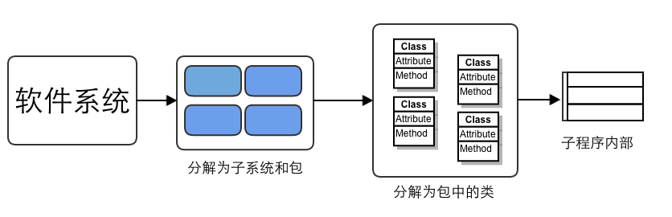
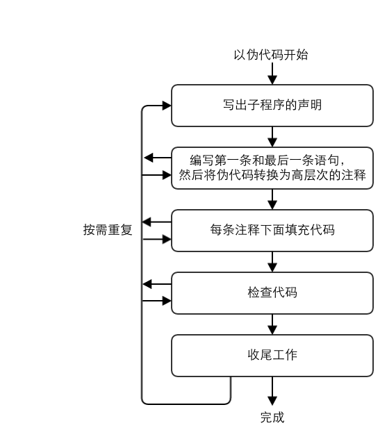

应付客户提出的新功能：“咦，这听起来是一个很不错的主意。不过由于它不是需求文档里的内容，我会整理一份修订过的进度表和成本估计表，这样你可以决定是现在实施，还是过一阵子再说。”
如果你要盖一个简单的建筑物–比如一个狗屋–你只需要去木材店买一些木头和钉子，一个下午就做好了，如果你忘了弄一个门，或是犯了什么错误，那也没什么大不了的，修改一下或者干脆从头再来就是了。你的损失也就是一个下午的时间。如果你写1000行代码时采用了错误的设计，你还可以重构甚至从头再来，不会损失太多。
如果你是在建一栋房子，那么这个建造过程就会复杂得多，而糟糕的设计所引发的后果也更严重。狗屋与房子建造的重要区别就在于设计蓝图，也就是软件的架构设计上。
精心计划，并非意味着事无巨细的计划或者过度的计划。你可以把房屋结构性的支撑规划清楚，而在日后再决定是用木地板还是地毯。
架构设计不能有二义性，需要很清楚的描述出来。
如果你不能向一个六岁的小孩解释某件事，那么你自己就没有真正理解它。
——Albert Einstein （爱因斯坦）
软件的首要技术使命是管理复杂度。
有两种设计软件的方式：一种方法是让设计非常简单，看上去明显没有缺陷；另一种方法是让设计非常复杂，看上去没有明显缺陷。
——C.A.R Hoare你已陷入复杂度的沼泽的一个现象就是，你发现自己顽固地用一种明显毫无作用的方法——至少在外人眼里。这就像是一个遇到车子抛锚的蠢货一样——他把水放到电池里然后把烟灰缸倒掉。
——P.J. Plauger

系统首先被组织为子系统。子系统被进一步分解为类，然后类又被分解为子程序和数据。每个子程序的内部也需要进行设计。
· 寻找现实设计的对象
· 形成一致的抽象
· 封装实现的细节
· 在可能的情况下继承
· 信息隐藏
· 找出容易改变的区域
· 保持松散耦合
· 探寻通用的设计模式
G·波利亚《怎样解题》（《How to Solve It》，1957）
1. 理解问题。 未知量是什么？现有的数据是什么？条件是什么？ 2. 设计一个计划。找出现有数据和未知量之间的联系。如果你找不出其中的联系，那么可能还得考虑些辅助性的问题。 在此之前你遇见过这一问题吗？或者曾经遇见过与此差别不大的问题？ 你使用了全部的数据吗？使用了全部的条件？考虑了该问题所涉及的所有核心概念了没？ 3. 执行着一个计划 执行你的求解计划，检查每一步。确定每一步都是正确的吗？ 4. 回顾 核对结果，核对论据，考虑能不能用其他方法来得出这个结果？你能一眼看出来吗？你能在其它问题上使用这一结果或方法吗？
设计是一种迭代过程，你并非只能从A点进行到B点，而是可以从A点到达B点，再从B点返回到A点。
每当你发现自己是通过查看类的内部实现来得知该如何使用这个类的时候，你就不是在针对接口编程了，而是透过接口正对内部实现编程了。
不知道怎样去使用一个类时，应告诉类的开发者，让开发者check out，修改接口文档后check in，然后告诉你“看看现在你知不知道该怎么用它了”。
为现实世界建模
降低和隔离复杂度
隐藏实现细节和全局数据
让参数传递更顺畅让代码更易于重用
把相关操作包装到一起
实现某种特定的结构
避免创建万能类
消除无关紧要的类
避免用动词命名的类
按照输入-参数-输出的顺序排列参数。
把子程序的参数个数限制在大约7个以内。
宏子程序：用大括号括起含有多条语句的宏。
断言是指在 开发期间 使用的、让程序在运行时进行自检的代码（通常是一个子程序或宏）。
1. 用错误处理代码来处理预期会发生的状况，用断言来处理绝不应该发生的状况
2. 避免把需要执行的代码放到断言中
3. 用断言来注解并验证前条件和后条件
前条件是子程序或类在调用子程序或实例化对象之前要确保为真的属性。
后条件是子程序或类在执行结束后要确保为真的属性。
4. 对于高健壮性的代码，应该先使用断言再处理错误
异常是把代码中的错误或异常事件传递给调用方代码的一种特殊手段。
1. 只有在真正例外的情况下才抛出异常
2. 避免在构造函数和析构函数中抛出异常，除非你在同一地方把它们破获
3. 在宜昌消息中加入关于导致异常发生的全部信息
4. 考虑创建一个集中的异常报告机制

程序主体中仅能出现的文字量就是0和1，任何其他文字量都应该换成描述性的表示。
整数
检查整数除法，7/10不等于0.7，而是0或负无穷大！
检查整数溢出。
浮点数
避免数量级相差巨大的数之间的加减运算。
避免等量判断。
处理舍入误差问题。
字符串
C语言中长度为n的字符需要n+1字节的存储空间。
用null初始化字符串以避免无结束符的字符串。
用字符数组取代C中的指针。
用strncpy()取代strcp()以避免无结束符的字符串。
指针
在使用指针之前检查指针。
用狗牌来检测损毁的内存。（狗牌即编辑字段）
在删除或者释放指针之后把它们设为空值。
编写覆盖子程序，集中实现避免指针相关的问题。
把正常情况的处理放在if后面而不要放在else后面。
把最常见的情况放在最前面，且确保所有的情况都考虑到了。
case语句中default字句只用于检查真正的默认情况。
把初始化代码放在循环前面。
一个循环只做一件事。
使循环终止条件看起来很明显。
避免出现依赖于循环下表最终取值的代码（将最终值赋给一个变量）。
确认递归能够停止。
使用安全计数器防止出现无穷递归。
用查表的方法获取数据。常用方法：
1. 直接查询
2. 索引查询
3. 分段查询
一个应用程序应该只采用一些单入单出的控制结构。有三个组成部分：
1. 顺序
一组按照先后顺序执行的语句。
2. 选择
一种有选择的执行语句的控制结构。
3. 迭代
一种使一组语句多次执行的控制结构。
在得到认可并形成文字之前，非正式的复查过程往往会在多年的开发文化中为程序员们代代传授。强调复查的理由显而易见，因为对最优秀的程序员来说，他们自己极少会在文字中提到复查；而对那些水平很差的程序员而言，他们往往又坚信自己的代码无懈可击，认定复查毫无必要。
——Daniel Freedman 和 Gerald Weinberg
在进行结对编程的时候，以为程序员编写代码，另外以为注意有没有出现错误，并考虑某些策略性的问题，例如代码的编写是否正确，正在编写的代码是否所需等。结对编程应注意：
1. 用编码规范来支持结对编程
2. 不要让结对编程编程旁观
3. 有规律地对结对人员和任务进行轮换
4. 避免新手组合
5. 不要强迫程序员与自己关系紧张的人组队
6. 确定一个组长
详查（正式检查）角色：
1. 主持人
负责保证详查以特定的速度进行，在技术上必须能够胜任，主要负责管理详查的其他方面，例如分派复查设计和代码的人物，分发详查所需的核对表，预定会议室，报告详查结果，以及负责跟踪详查会议上指派的任务。
2. 作者
解释设计和代码中不清晰的部分。
3. 评论员
同设计和代码有直接关系，但又不是作者的人。主要职责是找出缺陷。
4. 记录员
记录详查会议期间发现的错误，以及指派的任务。
详查中的自尊心
进行详查的目的是发现设计或代码中的缺陷，而不是探索替代方案，或者争论谁对谁错，其目的绝不应该是批评作者的设计或者代码。因为设计或者代码收到了批评，作者可能感到自己难辞其咎，所以很自然地作者会觉得代码让他脸上无光。作者应该预料到他会听到对某些缺陷的批评，而那些其实并不是缺陷，还有许多是有争议的。尽管如此，作者应该承认每一个所谓的缺陷，然后继续详查。承认一个批评并不意味着作者认同批评的内容。在复查之后，作者可以独自对每一个问题进行思考，判断它是否真的是一个缺陷。
评论员也必须记住，最终是由作者来负责决定如何处理缺陷。我们应该享受寻找缺陷的了却，但每一个评论员必须尊重作者决定如何解决某个错误的最终权力。
测试是一种检查错误的方法，而调试意味着错误已经被发现，要做的是诊断错误并消灭造成这些错误的根本原因。测试包括：
1. 单元测试
将一个程序员或者一个开发团队所编写的，一个完整的类、子程序或者小程序，从完整的系统中隔离出来进行测试。
2. 组件测试
将一个类、包、小程序或者其它程序元素，从一个更加完整的系统中隔离出来进行测试，这些被测代码涉及到多个程序员或者多个团队。
3. 集成测试
对两个或更多的类、包、组件或者子系统进行的联合测试，这些组件由多个程序员或者开发团队所创建。这种测试应该通常在有了两个可以进行测试的类的时候就应该尽快开始，并且一直持续到真个系统开发完成。
4. 回归测试
指重复执行以前的测试用例，以便在原先通过了相同测试集合的软件中查找缺陷。
5. 系统测试
在最终的配置下运行整个软件，以便测试安全、性能、资源消耗、时序方面的问题，以及其他无法在低级集成上测试的问题。
测试通常分为两大类：
1. 黑盒测试
测试者无法了解测试对象内部工作机制的测试。
2. 白盒测试
测试者清楚待测试对象内部工作机制的测试。
调试是确定错误根本原因并纠正此错误的过程。
程序员们往往不愿意使用现成的数据来约束他们的推理。他们往往喜欢进行琐碎和无理性的修改，而且他们通常不愿意推翻以前不正确的修改。
——Iris Vessey
在动手之前先要理解问题
理解程序本身，而不仅仅是问题
验证对错误的分析
保存最初的源代码
治本，而不是治标
修改代码时一定要有恰当的理由
一次只做一个改动
检查自己的改动
增加能暴露问题的单元测试
休息一下
所有成功的软件都经历过改变。
——Fred Brooks
在不改变软件外部行为的前提下，对其内部结构进行改变，使之更容易理解并便于修改。
2014-10-20 16:28:41
Chrish time